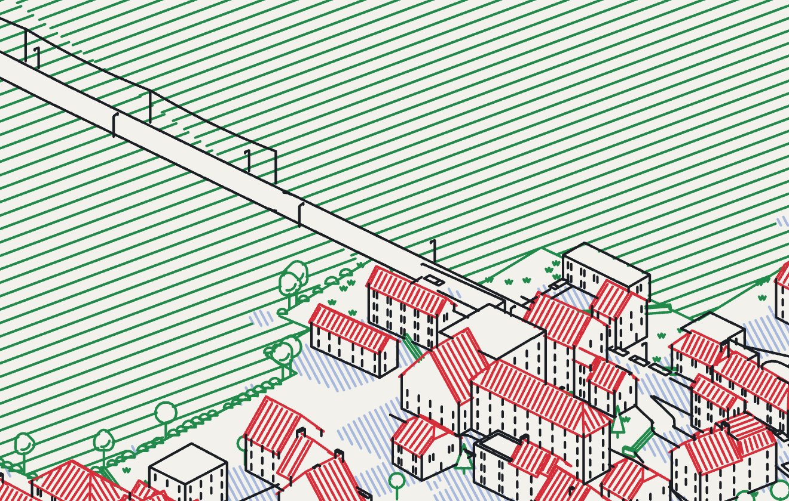
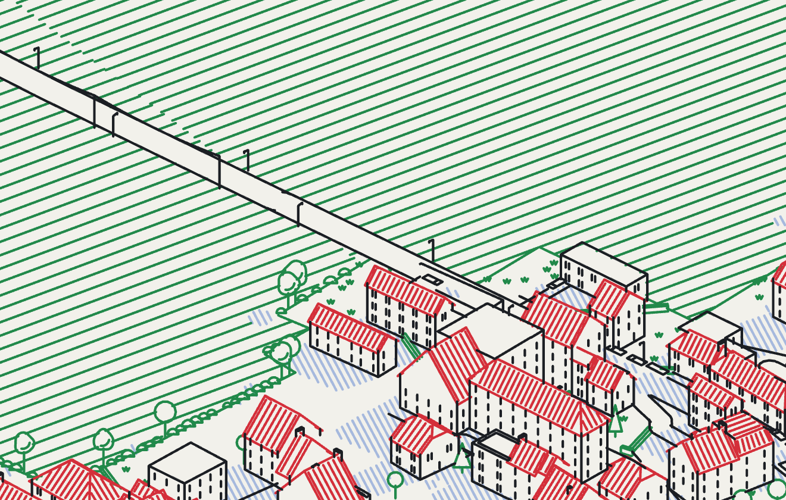

Road seams and village transitions
Round 30 · Sułoszowa · 50.2747° N, 19.7106° E · 1:1600
Two compatible road endpoints were 21 cm apart but rounded to different map keys. The route builder missed their connection. Independently, per-support urban checks could allow small pockets of overhead wires to restart near houses.
Changes
- Search neighbouring spatial cells and measure the actual endpoint gap. Compatible ends within 0.75 m join if their directions agree. Nearby parallel roads, ambiguous forks and incompatible classes stay separate.
- Anchor placement decisions to the westernmost route vertex, rather than a feature boundary. Joining a seam now produces one placement decision; the selected side and pole phase can change as the route is reconstructed.
- Suppress rural pockets shorter than 150 m beside urban rejections. This works in both traversal directions and allows longer countryside stretches beyond a settlement.
- Water, building, airfield and rejected-support checks remain hard breaks. No span is stretched blindly across an obstruction.
Village approach


Verification
Regression tests cover the 21 cm rounding mismatch, spatial-cell boundaries under a coordinate shift, reversed feature order, nearby parallel roads, excessive gaps, route anchors and village pockets in both directions. All prior power tests remain in place.
The reported location and four LOD comparisons at 1:1600 were rendered. Waste scores are unchanged at reported precision. The two intended golden changes affect power linework only: Midtown route joins and Nördlingen village-edge fragments. Golden sheets and selected LOD close-ups were inspected on screen.
No physical plot or exhaustive pan sweep across all tile contexts was checked. These are inferred artistic routes, not confirmed utility data.